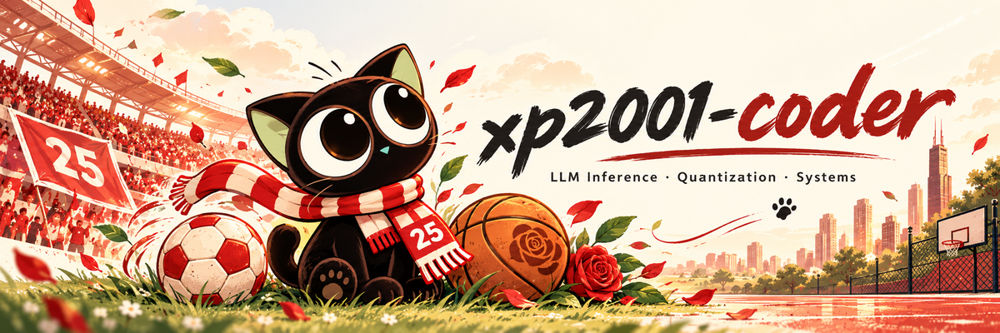
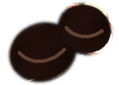
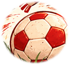
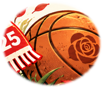

I work on AI infrastructure, model quantization, inference performance, and distributed LLM systems.
Selected Work
- Model Quantization — Research and tooling · LLMC · MQBench · PPQ
- LLM Inference & GPU Kernels — Runtime performance and MACA backend work ·
C++ / Python / CUDA / MACA· vLLM · SGLang · llama.cpp - Distributed Inference — KV-cache transport and distributed serving · Mooncake
- Learning Notes — zero2vllm · Inference systems from first principles.